Contents
Installation
Find the extension in chrome web store and press 'Add to Chrome'. Confirm the popup by pressing 'Add extension'. Another popup will inform you that the extension was installed and a or is added in the top right corner.
VR Dashboard runs on Chrome, Chromium and Edge[1] desktop browsers. Mobile browsers do not allow extensions. Porting to other browser is difficult if not impossible, due to the lack of Websockets support.
Running
The extension can only be activated on browser tabs visiting virtualregatta.com. On other web pages, the extension icon remains greyed out. To activate the extension,
- Go to virtualregatta.com
-
Activate the extension.
Note:
VRDashboard will not start from the VR main page on some versions of Chrome. If your version is affected, log in to Offshore first (see below). Alternatively you can use Chromium or Edge. -
A warning banner will appear above the content pane of Chrome:
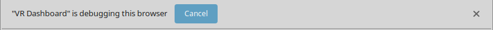
Do not cancel or close the warning. This will disconnect VR Dashboard from the Debugger and it will not receive any game messages.
You can suppress the debugger warning altogether by starting the browser with the
--silent-debugger-extension-apicommand line switch. The exact way to do this depends on you operating system. Please be aware that the switch affects all extensions. While VR Dashboard will not harm your computer, other extensions might. -
Log in to VR Offshore.
After a few seconds, your boat name should appear in the top left corner.
-
Click on a race on the VR Offshore page.
The zezo.org router page will open in the background, with your boat position and options set.
If the router is not called, press F5 on the VR tab to reload the game.
Closing and Reloading
VR Dashboard is closed automatically if you close the VR browser tab, but it remains open if you simply navigate away from VR.
Reloading the VR Dashboard tab discards all data, but it does not close the tab. VR Dashboard keeps running.
Log off from VR Offshore and log into each race again to re-populate the race list.
UI reference
Top bar
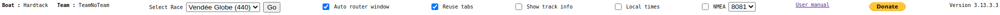- Boat
Displays your boat name. - Select Race
Switch races by selecting a race from the drop down list.
The drop-down list contains all the races supported by Zezo. Entries are greyed out if you do not participate in that race. - Go
Calls the router with your current position and options for the selected race. - Auto router window[on]
If switched on, the router will be called automatically when clicking on a race on the VR Offshore screen. - Reuse tabs[on]
If switched on, routing requests for a race will reuse the previously opened tab. Different races always open in different tabs. - Show track info[off]
If switched on, display infos on each track segment in tooltips on the boat tracks. See Map section.
Track infos are only displayed for followed boats.Warning:
Enabling this switch may cause VR Dashboard to become unresponsive or sluggish if you are following many boats. - Local times[off]
If switched on, timestamps are displayed in the browser's local timezone. If switched off, timestamps are displayed in the UTC timezone. - NMEA[off]
If switched on, NMEA messages are send to the specifed port at localhost. Use the povided NMEA proxy to forward messages to your NMEA software. See NMEA output on how to make the messages available to your NMEA softare.
- Version
Displays the installed version. If an update is available, it is installed automatically at the next browser restart.
Race overview table
This table displays the current boat status for each race you are participating. Selecting a race by clicking the corresponding row switches the race selection drop-down and the tabs to this race.
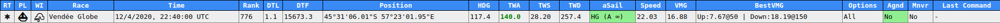Explanation of columns
- RT
Router. Request a routing for the corresponding race. - PL
Polars. Open toxcct's Polars page for the corresponding race. - WI
Windy. Open windy.com with the corresponding boat position. - Race
Race name - Rank
One of several rankings reported by VR. Usually somewhat inconsistent. - DTL
Distance to leader - DTF
Distance to finish - Position
Boat position - HDG
Boat heading. Set in bold if the boat is in heading mode. - TWA
True wind angle. Set in bold if boat is in TWA[2] mode. Green color if the boat is on starboard tack, red on port tack. - TWS
True wind speed at the boat position as reported by the server.
The game UI uses its own source of wind information, which is sometimes out of sync with the game server. - TWD
True wind direction at the boat position as reported by the server.
As for TWS, the game UI sometimes displays differing (incorrect) values. - aSail
Current sail and auto sail indication.
Red background means the sail is not the best possible sail.
Sail names are abbreviated: LJ: Light Jib, LG: Light Gennaker, STAY: Staysail, HG: Heavy Gennaker, C0: Code Zero.
- Speed
Current boat speed in knots - VMG
Velocity Made Good (speed component directly towards or away from wind) - Best VMG
Best upwind and downwind VMG achievable at current wind speed - Options
Options your boat is equipped with in this race (light wind sails, foils etc.) - Agnd
Boat is aground - Mnvr
Boat is maneuvering - Last Command
Most recent command accepted by the server in this race.
Examples:
First row: two programmed TWA changes with scheduled execution times; second row: immediate sail change
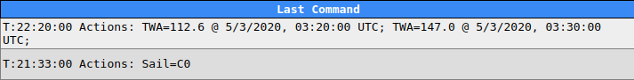
Tabs
The following tabs display more detailed information pertaining to the race selected in the race overview table. Select a tab by clicking on its name.
RACE LOG tab
This table contains the boat status history for the race selected in the race overview, along with value computed by VR Dashboard (vC, vT, Foils - see below).
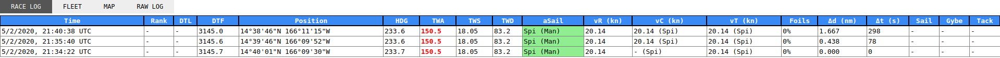 The first column Time contains the timestamp of the server message. Columns Rank, DTL, DTF, Position, HDG, TWA, TWS, TWD and aSail correspond to the Race Overview columns. Column vR (kn) is Speed in the Race Overview (boat speed reported by the server).The remaining columns are:
- vC (kn)
Computed speed (in knots).VR Dashboard attempts to verify the boat speed reported by the server using the elapsed time, previous and current position which are also (directly or indirectly) reported by the server. It attempts to take course changes into account. If this value differs from vR, it may mean that the server is doing something odd (which it did in the past but usually, VR Dashboard is in error).
If the value differs from vR, it is displayed with a red background.
- vT (kn)
Theoretical speed (in knots).This is the speed your boat could achieve, using the best sail available. VR Dashboard computes it using the TWA, TWS, available sails and options reported by the server. The best sail is indicated in parenthesis.
- Foils
Percentage of foils efficiency - Δd (nm)
Distance sailed since last status messageWhen not sailing with the best available sail this column displays the theoretical distance using the optimal sail:
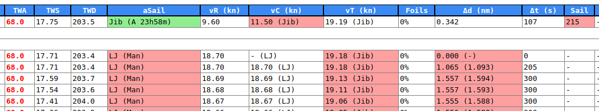
In the above case, Jib was better than the selected Light Jib. Code0 would probably be even faster, but the boat did not have the 'reach' option. - Δt (s)
Elapsed time since last status messageThe VR server usually sends status updates approximately every 5min.
The delta is sometimes zero or even negative. A zero delta often occurs if you switch back to the race in the game UI.
Negative values could to be indication of messages from another server (assuming VR uses load balancing). The effect may be related to lost commands, but there is no conclusive proof yet. In any case, be sure to check your course if duplicate status messages occur! - Sail, Gybe, Tack
Sail change, tacking or gybing penalty in effect, with the remaining time indicated. - Commands
Each command issued by the user and acknowledged by the server is displayed in the race log.
There is no separate column in the race log table, but Rank and Position are used as shown below.
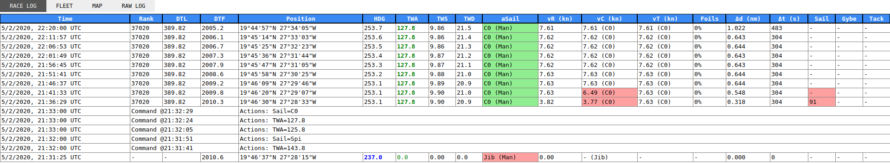The
Command @time is the time when the command was issued. The Time columns shows when the command will be executed.
FLEET tab
This tab displays information about your followed players and players of various other categories as selected by VR.
Click on a category in the Filters box to toggle the displaying of boats in this category.
Some information (like a player's start time in a record race) is only available on the player's 'UserCard'.
The UserCard is only transmitted on request, by clicking on the respective boat in the game UI.
The FLEET tab has three additional columns Start Date, ERT and avgS when displaying a record race.
The table can by sorted by Skipper, Rank, DTF, DTU, Sail, State, HDG, TWA, TWS or Speed by clicking on the column header.
Note: If VR Dashboard is activated after opening the VR Offshore page, VR Dashboard has no information which races are record races and the above columns will not be displayed. Re-enter VR Offshore to fix this.
Note: Your own boat is displayed in the table in red color. However if you log on to VR Offshore before starting VR Dashboard, it does not know your user name. In this case 'me' is displayed instead of your user name.
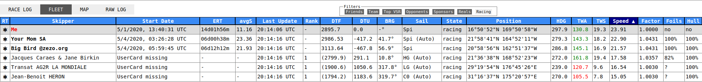- RT
Call router for this playerYour own boat's options are used. Reuses the router tab if 'Reuse tabs' is checked.
- Skipper
Player name - Start Date
Only in record races. - ERT
Estimated race time. Only in record races.VRDashboard estimates the overall race time based on the average speed achieved since the start. It uses the elapsed time, distance from start and distance to finish provided in the VR server 'UserCard' message.
- avgS
Average speed since the start. Only in record races. - Last Update
Time of last (periodic) update.Opponent data is updated from the server when you enter a race, or individually if you click on a boat.
This timestamp refers to the time when the server last computed the current boat position.Please note that ERT and avgS are only updated if you click on the boat in the game UI, as they depend on the UserCard message.
- Rank
Player's current rank - DTF
Distance to finishDTF is available from a player's User Card. If you did not request the User Card yet, VR Dashboard instead displays the great circle distance to the finish (in parenthesis).
- DTU
Distance to 'us' - BRG
Bearing from 'us'Negative bearing means the other boat is astern of yours.
The bearing can used to tell if you are going to cross in front of an opponent when you are on opposite tacks:
If the bearing diminishes, you are in front. - Sail
Sail used by opponent boat. - State
One of racing, waiting or finished. - Position
- HGD, TWA, TWS, Speed
Heading, true wind angle, true wind speed and boat speed - Factor
The boat's current speed factor over a no-options boat. - Foils
Indicates boat's current the foil benefit.
'no' is displayed if the boat is in foiling conditions but has no foils.
'?' is displayed if the boat is not in foiling conditions (and therefor, VR Dashboard cannot determine if the boat has foils). - Options
If the UserCard for the boat is available, displays the boat's options (sails, foils, hull etc.).
Remember that the UserCard is retrieved by clicking on the boat in the game UI.
Note: VR Dashboard does not store UserCards or any other information about boats when terminated.
MAP tab
The map displays all boats reported by VR, including your own. It also displays the race gates and the location of your waypoints. If present in the race, the ice limit is displayed as rhumb line segments.
For record races, the map displays the leader ghost track and the ghost track of your own best try.
Hovering the mouse over a mark displays its position (latitude/longitude) and other mark properties.
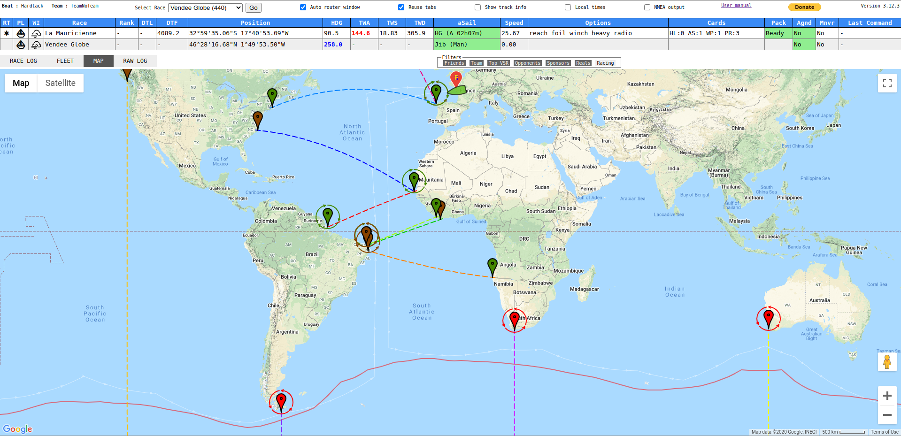Please note:
- The position of the waypoints w.r.t. land features can not be relied upon. Do not use the map to position waypoints close to land features. VR uses a different map than VR Dashboard.
-
However, waypoints are displayed correctly relative to the position of race marks.
Gates Gates and buoys are called checkpoint in VR. A checkpoint may consist of one ore more gates. All gates of a checkpoint are displayed in the same color (of the dashed line between the port and starboard mark). You need to pass only one gate of a checkpoint.
- Gate is displayed in bright color if not passed yet
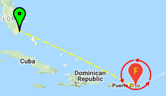 - Passed gate appears dimmed
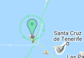
Gate/buoy tooltip
The tooltip displays the checkpoint number followod by a '.' and a buoy counter, whether to leave to port or starboard, name (if any), position, and wether the mark was passed.
- Example 1
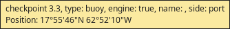 - Example 2
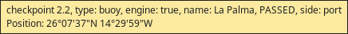
Boat tooltip
Displays name, heading, TWA and speed. Displays elapsed race time of user if boat was clicked on the VR map (UserCard is available).
- Example: Boat in normal race
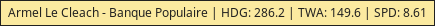 - Example: Boat in record race, User Card not available
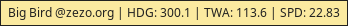 - Example Boat in record race, User Card available
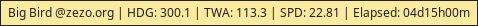
Track tooltips
If Show track info is enabled, tracks of followed boats are decorated with black dots.
The dots have tooltips with the following information:
- boat name
- timestamp
- boat speed
Calculated from the track point position and timestamp w.r.t. previous point. - tag indicating the action performed at this point (as provided by the VR server).
- t - no action
- hdg - manual heading change
- twa - manual TWA change
- hdg-prg - programmed heading change
- twa-prg - programmed TWA change
- wp - waypoint
RAW LOG tab

If Log messages is checked, all Websocket messages sent and received by the game UI are logged.
Messages are in JSON format.
Incoming messages are prefixed <<<, outgoing messages are prefixed >>>
How to retrieve boat polars
Boat polars are transmitted in the response to the "Meta_GetPolar" request. The game UI sends this request when you enter a race for the first time after logging on to VR Offshore.
- Switch on message logging
- Log on to VR Offshore
- Enter the desired race
- Locate the outgoing message starting with
{"@class":".LogEventRequest","eventKey":"Meta_GetPolar"and note itsrequestId. - Locate the corresponding LogEventResponse (usually it is on the next line but sometimes may be found further down).
- Mark whole line by triple-clicking it and press Ctrl-c to copy the line.
NMEA output
VRDashboard can generate NMEA output. A HTTP to telnet proxy is required because the Chrome extension itself can only use HTTP, while NMEA devices use Telnet. The NMEA proxy is included in the VRDashboard source. It requires Python3 and can also be obtained here
Installation
- Install Python3
- Either
- Download nmea_proxy.py and copy it to a directory of your choice (referred to as NMEA_PROXY below)
- Or use the VRDashboard source directory
Usage
- Start the NMEA proxy
Open a command shell, change to the directory where the NMEA proxy is located and run it. The script should print the port it is listening on:
The proxy always listens on localhost. This is the only host the Chrome extension can use.$ cd NMEA_PROXY
$ python3 nmea_proxy.py --port 8081 --outport 10000
INFO:root:Creating Server
INFO:root:httpd listening on port 8081
Outbound TCP ports are created by adding the race number (e.g. 440) to the outport number. It defaults to 10000.You can select the outgoing interface using the --bind parameter (0.0.0.0 for all interfaces):
$ cd NMEA_PROXY
$ python3 nmea_proxy.py --bind inteface_ip
INFO:root:Creating Server
INFO:root:httpd listening on port 8081
- Start VRDashboard and switch on NMEA output.
After a while, you should see messages like below:
where the numbers correspond to the active races listed in the race selector.Creating socket for race ID 461
Creating socket for race ID 434
Note: The sockets are created only when the first message is received. This may take up to 5min.
- Connect your NMEA software to localhost, TCP port
10nnnwherennnis there race ID.
You should see connection messages like below:
Accepted connection on port 10434
Connection lost on port 434, closing.
Accepted connection on port 10461
Accepted connection on port 10434
-
VRDashboard sends a GNRMC and INMWV message once per second:
$ telnet localhost 10434
Trying 127.0.0.1...
Connected to localhost.
Escape character is '^]'.
$GNRMC,192516,A,3343.3213,N,17709.3002,W,14.3,287.2,050620,,,A*41
$INMWV,099.86,T,07.61,N,A*02
...
Tips and tricks
Fine-tuning TWA
The command log (in the RACE LOG table) can help you to fine-tune TWA.- Select the desired program step in game UI
- Switch to heading mode, move the programmed time forward or backward and switch back to TWA mode
- Observe the TWA value in the Dashboard
- Repeat steps 2-3 until the desired fractional TWA is reached
Superseding commands
Notice that commands are always executed on the full minute. This allows you sometimes to undo a command issued by mistake, or to avoid double penalties by performing a gybe or tack and a sail change at the same minute.
Bugs and known issues
Please report bugs to michael.kappert.01@gmail.com or submit as a 'Problem' in the chrome web store. You can also submit questions and suggestions in the web store.
- The first entry in the race overview table only appears when the second message is received.
- Reloading the Dashboard tab closes it and disconnects the Dashboard.
- The map should resize automatically to fit the race course, but there is still a bug in the resizing logic. Click on the selected race again to force resizing.
- 'Elapsed time' display in boat tooltip is meaningless in normal race
Frequently asked questions
- I have installed VR Dashboard but there is no Z icon?
Click the plugin icon in the top right corner of your browser. You should see a VR Dashboard entry there. You can start it from there, or pin it to the task bar.
- Race xxx is not available from the race selection drop-down?
Cvetan may not have set up a router for the race yet. Please ask (politely) on the zezo.org forum.
- Race selection is empty?
- Please check that you are not blocking zezo.org (check your firewall/virus scanner/proxy, especially in a company network).
- VR Dashboard does not start from the VR main page. There is an error alert, or the Dashboard tab opens and closes immediately.
This seems to be a Chrome bug. Either use Chromium, or try one of the following workarounds:
- Start VR Dashboard immediately after navigating to the VR main page (while the page is still loading)
- Log on to VR Offshore, and start VR Dashboard immediately
- VR Dashboard isn't working / has stopped working?
Some table cells are empty/only display a '-'?
My boat name is not displayed?
No race are listed?- Please be sure to activate the Dashbaord before you log on to VR Offshore as described above. It is necessary to follow this sequence because VR sends some information that VR Dashboard requires immediately after you log in and after your first join a race.
- Do not cancel or close the Debugger warning banner. VR Dashboard requires the debugger for intercepting the game messages.
- The button remains greyed out, I can't start VR Dashboard?
VR Dashboard is only active on the game homepage virtualregatta.com. Some big regattas (like Vendee Globe, Ocean Race) make the game available on their sites, but you can't activate the extension on these site. Head over to the VR Offshore homepage and join the race from there.
- Can you please add <your favorite feature> to VRDashboard?
Probably yes, but I only have limited time and I might reject your request if it's too much work, and especially if it involves adding columns to one of the tables. The Dashboard UI looks quite crowded already.
Btw, the VR Dashbaord source code is available on Github.
Donate!
If you like VR Dashboard, feel free to make a small donation to the maintainer (michael.kappert@gmx.net) to keep things going!
About
VRDashboard was created by Cvetan Ivanov (Big Bird @ zezo.org) and Michael Kappert (Hardtack fka Raumzeit aka mak08).The map was contributed by Patrick Guelat (Xeelee).
Further contributions were made by Romain Le Lamer (GeGaX), Nicolas Guittet (toxcct) and Guy Juy (mcmgj).